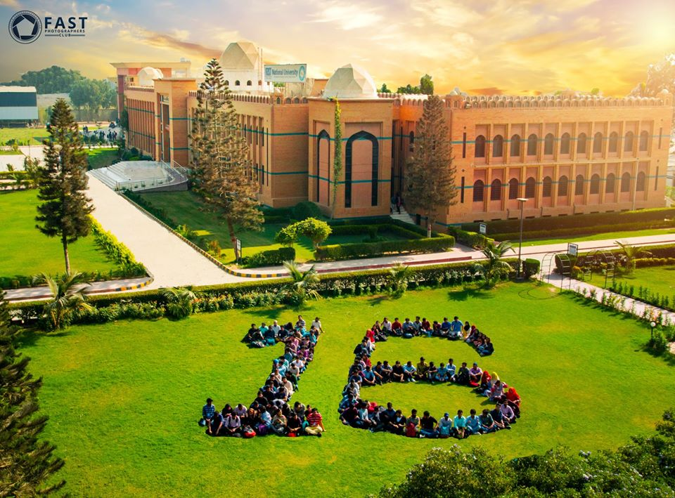
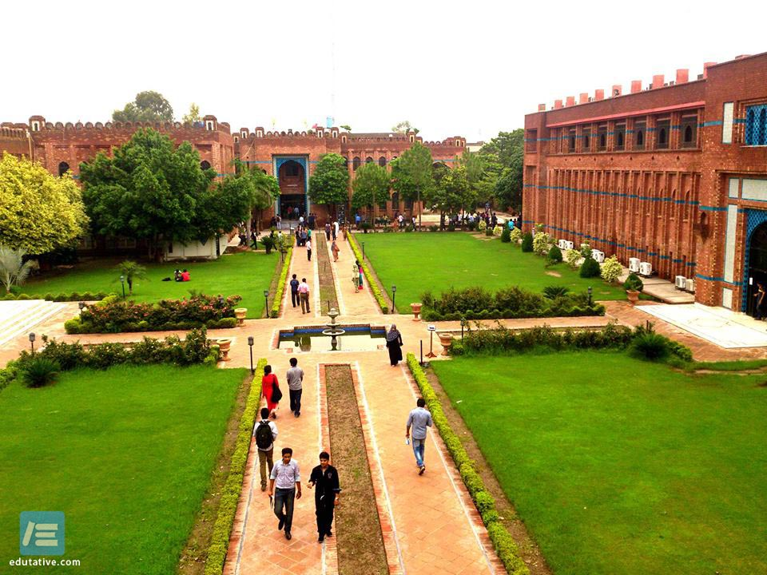

KARACHI CAMPUS
St-4, Sector 17-D، NH 5, Karachi, Karachi City, Sindh, Pakistan
Karachi campus have two branches, main campus that is located on National highway and city campus located in block-6 PECHS. Students at Karachi campuses are facilitated with modern labs, cafeterias, libraries, sports and gym facilities, and transport facilities.
Recommendation: Fast University Karachi

LAHORE CAMPUS
852-B Milaad St, Block B Faisal Town, Lahore, Punjab 54770, Pakistan
This campus is located in Faisal town, spread over 12.5 acres of land. Indoor and outdoor sporting facilities and playgrounds are available on campus for football, volleyball, badminton, cricket, basketball, lawn tennis, table tennis, and jogging. Swimming, rowing, and athletics have developed off-campus arrangements. There are completely air-conditioned purpose-built classrooms with teaching aids, as well as a number of computing and engineering laboratories, an Auditorium, Seminar Hall, Cafeteria, Boys & Girls Common Rooms, and offices of various student groups. The library of Lahore Campus is the second library in Pakistan with its library catalogue accessible through Library of Congress Gateway. It is a spacious computerized library with over 21,000 books and 57 international journals/ magazines, providing students and faculty access to diverse up-to-date information resources.
Recommendation: Fast University Lahore
